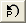

Parameterinitialisierung mit LabTalk in NLFit
CellVal-IniPara-Fitting
Zusammenfassung
In Vorgängerversionen von Origin können Anpassungsparameter nur mit Origin C-Code initialisiert werden. Seit Origin 9 SR1 wird diese Funktion auch von LabTalk-Skript unterstützt. Diese Implementierung ist insbesondere dann nützlich, wenn ein Anwender Arbeitsblattwerte für die Initialisierungsparameter einsetzen will.
In diesem Tutorial wurden drei Aufnahmekurven durch Adsorption bei drei verschiedenen Temperaturen gemessen. Die Ergebnisse werden in drei .txt-Dateien exportiert. Die Bedingungen des Experiments werden in der gleichen .txt-Datei als Kopfzeileninfo gespeichert. Wir werden die Daten an ein Modell der isothermen Sphäre anpassen, entsprechend der folgenden Gleichung:
")
, wobei y die normierte Aufnahme der Masse (mg/g), x die Zeitspanne (s), T die Zeitkonstante (1/s) ist plus die Anpassungsparameter.
Es gibt eine empirische Gleichung, die das Verhältnis von Temperatur und Zeitkonstante beschriebt, die folgendermaßen lautet:
Für die Aufnahmekurve von jeder Temperatur wird T aus dieser Gleichung berechnet und als Initialisierungswert für die Kurvenanpassung verwendet.
Origin-Version mind. erforderlich: Origin 9.0 SR1
Was Sie lernen werden
Dieses Tutorial zeigt Ihnen, wie Sie:
- eine benutzerdefinierte Anpassungsfunktion erstellen und Labtalk-Skript verwenden, um die Parameterinitialisierung durchzuführen.
- Werte in einem Arbeitsblatt als Initialisierungsparameter verwenden.
Schritte
Schreiben des Skripts für die Parameterinitialisierung einer benutzerdefinierten Anpassungsfunktion
- Wählen Sie Hilfsmittel: Fitfunktionen erstellen (oder drücken Sie F8), um das Hilfsmittel Fitfunktionen erstellen zu öffnen. Wählen Sie auf der Seite Ziel die Option Eine neue Funktion erstellen und klicken Sie auf Weiter.
- Stellen Sie auf der Seite Name und Typ sicher, dass die Funktion in der Kategorie User Defined erstellt wird, nennen Sie die Funktion AufnahmeKurvenfit, belassen Sie das Funktionsmodell bei Explizit und wählen Sie Origin C als Funktionstyp aus. Klicken Sie auf die Schaltfläche Weiter.
- Belassen Sie auf der Seite Variablen und Parameter die Unabhängigen Variablen und Abhängigen Variablen bei den standardmäßig festgestellten x und y. Setzen Sie die Parameters auf T und klicken Sie auf Weiter.
- Geben Sie auf der Seite Origin C-Anpassungsfunktion die folgende Gleichung im Bearbeitungsfeld Funktionskörper ein und klicken Sie dann auf Weiter.
y = 1 - 6/(pi^2)*exp(-(pi^2/T)*x)
- Wählen Sie auf der Seite Parameterinitialisierungscode die Option Benutzerdefinierten Code verwenden und dann die Option LabTalk verwenden, um die Verwendung von Labtalk-Skript zu aktivieren. Geben Sie im Bearbeitungsfeld Initialisierungscode das folgende Skript ein:
//Code to be executed to initialize parameters //Get the current worksheet page. range rpage=ry.getpage()$; //Get the data worksheet range rlayer=ry.getlayer()$; //Get the data worksheet index int inext=rlayer.index; //Make sure the data workbook is active win -a %(ry.getpage()$); //Make sure the data worksheet is active page.active=inext; //Active column 2 in the data worksheet wks.col=2; //Get the temperature as a string from column comment string str1$ = wks.col.comment$; //Get the string of the temperature number string str2$ = str1.Left(3)$; //Substitute the string variable to a double number double Temp = %(str2$); //Use the empirical equation to calculate the initial value of T T=25000 - 58 * Temp; //Check whether parameter initialization script runs successfully type -b "Experimental temperature is $(Temp) K, so the initial value of T is $(T)."
| Hinweise: Das ry in dem obenstehenden Skript ist eine automatisch definierte Bereichsvariable für den Eingabebereich des Parameters y. Die Syntax für diese Bereichsvariable lautet r+Parametername. Wenn beispielsweise der Parametername Temp ist, dann sollte die Bereichsvariable rTemp heißen. |
- Klicken Sie auf Fertigstellen, um die benutzerdefinierte Anpassungsfunktion UptakeCurveFit zu erstellen. Sie können ihre .fdf-Datei im Anwenderdateiordner finden.
Anpassen von daten mit der benutzerdefinierten Anpassungsfunktion
- Öffnen Sie ein neues Origin-Projekt, indem Sie auf die Schaltfläche
 auf der Symbolleiste Standard klicken. Klicken Sie auf die Schaltfläche (oder Daten: Aus Datei importieren: Importassistent oder drücken Sie auf Strg+3), um den Importassistenten zu öffnen.
auf der Symbolleiste Standard klicken. Klicken Sie auf die Schaltfläche (oder Daten: Aus Datei importieren: Importassistent oder drücken Sie auf Strg+3), um den Importassistenten zu öffnen.
- Wählen Sie in Datenquelle die Datei UptakeCurve_343K.txt, die sich im Verzeichnis <Origin-Verzeichnis>\Samples\Curve Fitting\ befindet. Klicken Sie auf Weiter, um zur Seite Headerzeilen zu gelangen. Setzen Sie die Langnamen, Einheiten und Kommentare auf 3, 4 bzw. 1 bis 1.
- Klicken Sie auf Fertigstellen, um die Datei zu importieren. Beachten Sie, dass die Experimenttemperatur als Kommentar von Spalte 2 gespeichert ist, die von dem Labtalk-Skript für die Parameterinitialisierung in der Anpassungsfunktion UptakeCurveFit abgerufen wird.
- Markieren Sie Spalte B und wählen Sie Analyse: Anpassen: Nichtlinearer Fit (oder drücken Sie Strg+Y), um den Dialog NLFit zu öffnen. Wählen Sie User Defined als Kategorie und UptakeCurveFit(User) als Funktion.
- Ein Warnhinweis wird angezeigt und zeigt sowohl die Experimenttemperatur als auch den berechneten Initialisierungswert der Zeitkonstanten an.
- Wechseln Sie zur Registerkarte Parameter. Der Wert des Parameters T ist 5106, was darauf hindeutet, dass das Skript der Parameterinitialisierung erfolgreich aufgerufen wurde.
- Wechseln Sie zur Registerkarte Code und wählen Sie den Abschnitt Parameterinitialisierung. Hier können Sie das Skript der Parameterinitialisierung erneut überprüfen, indem Sie auf die Schaltfläche  klicken.
- Klicken Sie auf OK, um das Warnfeld zu schließen, und dann auf Fit, um die Anpassung durchzuführen.
Erstellen einer Analysevorlage und Durchführen einer Stapelverarbeitung
- Wechseln Sie zum Berichtsblatt FitNL1, das durch die vorhergehenden Schritte erzeugt wird, klicken Sie auf die dreieckige Schaltfläche rechts neben der Tabelle Zusammenfassung und wählen Sie Kopie als neues Blatt erstellen. Ein neues Blatt wird erstellt. Löschen Sie Spalte A in dem neuen Blatt und benennen Sie es um in Ergebnis.
- Lassen Sie die Arbeitsmappe aktiviert und wählen Sie Datei: Arbeitsmappe als Analysevorlage speichern, um diese Arbeitsmappe als MyUptakeFit.ogw zu speichern.
- Erstellen Sie ein neues Origin-Projekt und wählen Sie Datei: Stapelverarbeitung, um den Dialog batchProcess aufzurufen.
- Laden Sie die Analysevorlage MyUptakeFit.ogw, wählen Sie die Dateien UptakeCurve_343K.txt, UptakeCurve_373K.txt und UptakeCurve_403K.txt im <Origin-Verzeichnis>\Samples\Curve Fitting\, wählen Sie Dateiname für Datensatzidentifizierer und stellen Sie sicher, dass die anderen Einstellungen mit dem untenstehenden Bild übereinstimmen:
- Klicken Sie auf OK, um die Stapelverarbeitung durchzuführen. Für jede ausgeführte Datei wird ein Warnhinweis aufgerufen, das auf den verwendeten Initialisierungswert hinweist. Klicken Sie jedes Mal auf OK, um das Hinweisfenster zu schließen und mit der Stapelverarbeitung fortzufahren. Schließlich wird der Zusammenfassungsbericht erstellt: